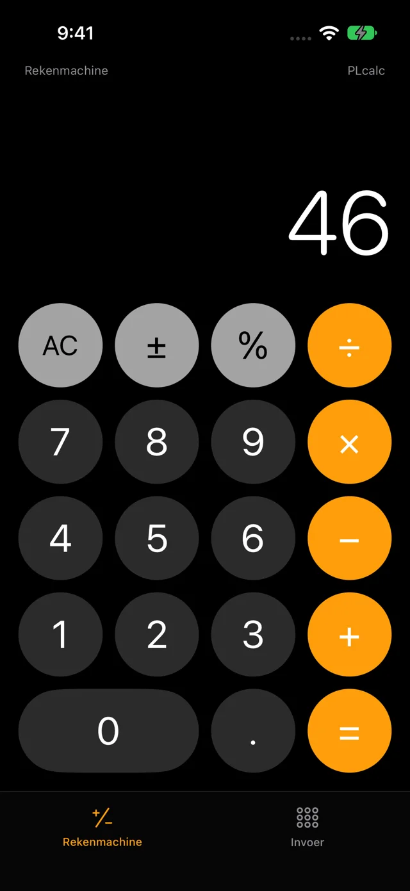
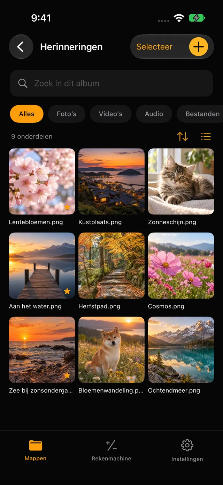
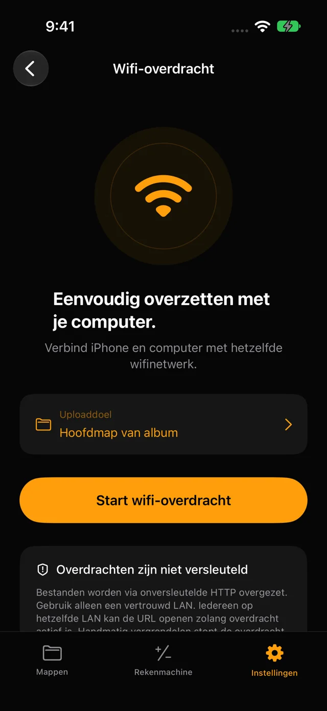

Versleuteld op je apparaat
Bestanden en mapnamen worden versleuteld opgeslagen. Gebruik een pincode van 4 cijfers of een wachtwoord van 8–64 tekens.
iPhone & iPad · plcalc
Bewaar foto’s, video’s en bestanden versleuteld op je iPhone of iPad. Open albums met een pincode of wachtwoord. Geen account nodig.
Bekijk in de App StoreiOS 17+ · iPadOS 17+


PHOTO LOCK CALCULATOR
Bestanden en mapnamen worden versleuteld opgeslagen. Gebruik een pincode van 4 cijfers of een wachtwoord van 8–64 tekens.
Sorteer foto’s, video’s, audio en documenten in submappen. Zoek, markeer favorieten en herstel items uit de prullenmand.
Verbind met hetzelfde wifi-netwerk en open het adres uit de app in je browser. Kies een map en upload bestanden.

01 / 02 / 03
Kies en bevestig een pincode of wachtwoord.
Open het album via het invoertabblad en voeg bestanden toe met +.
Gebruik het rekenmachinetabblad voor dagelijkse berekeningen.
Vergeten pincodes en wachtwoorden zijn niet te herstellen. Maak aparte back-ups van belangrijke bestanden. De capaciteit hangt af van de vrije ruimte.
Wifi-overdracht gebruikt onversleutelde HTTP. Gebruik een vertrouwd netwerk: apparaten op hetzelfde LAN hebben tijdens het delen toegang tot het album. Het systeem kan achtergrondoverdrachten onderbreken.
Ondersteuning ↗